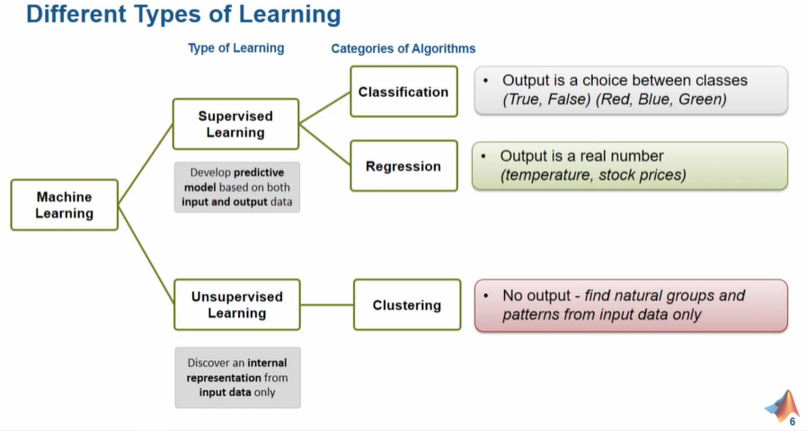
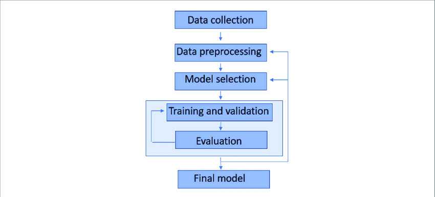
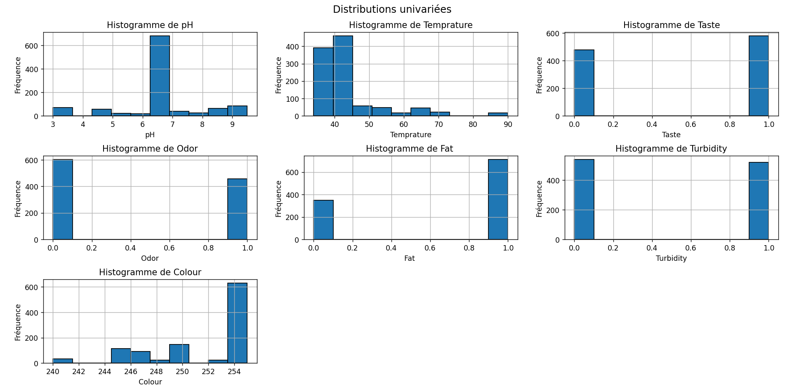
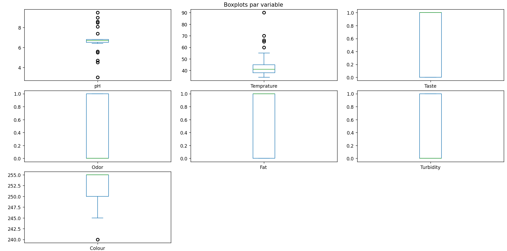
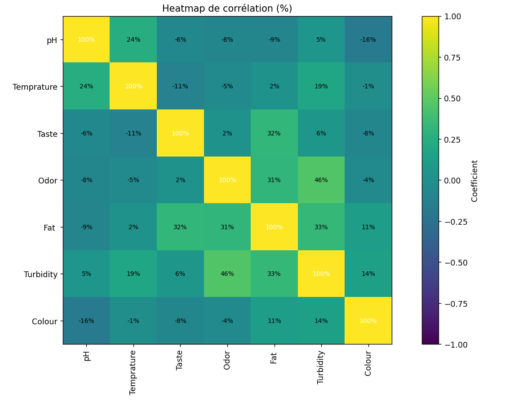
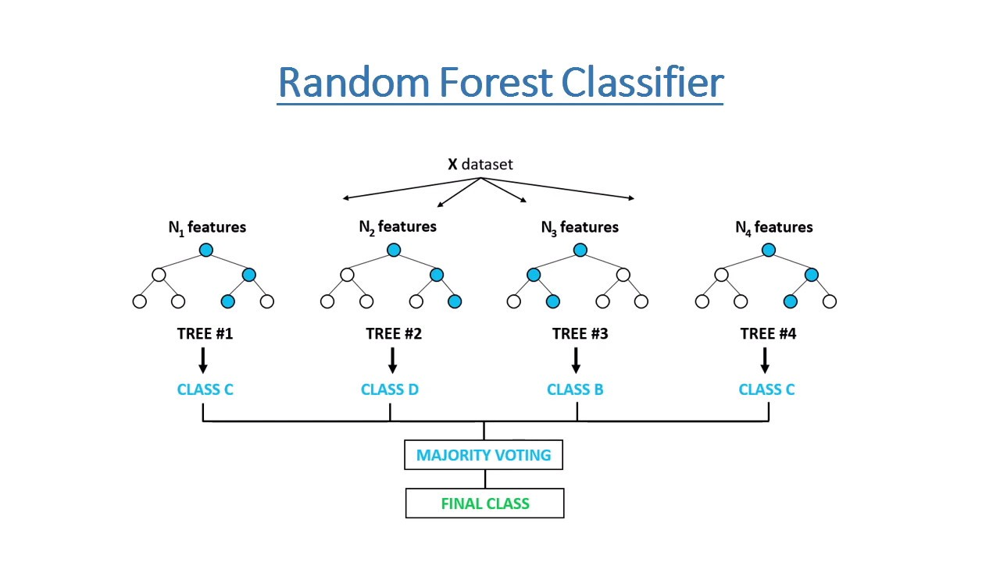
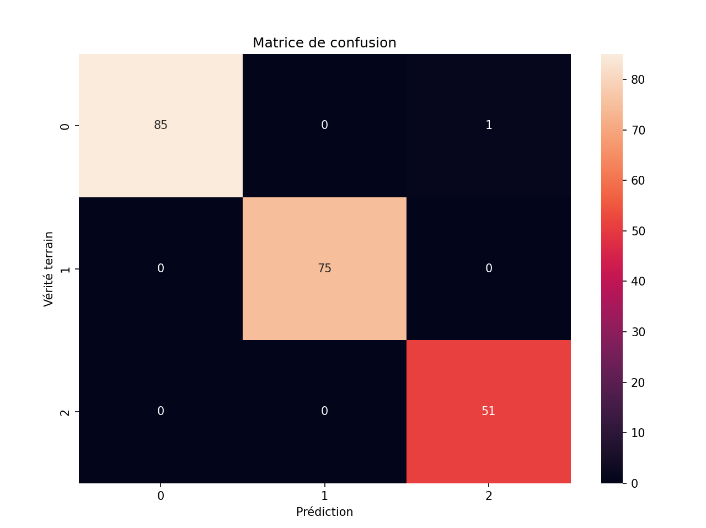
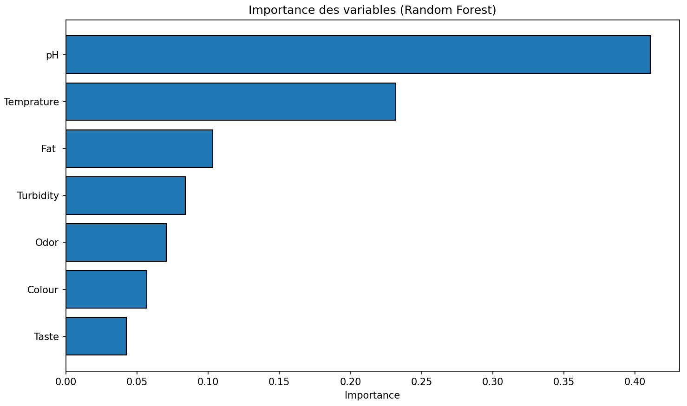
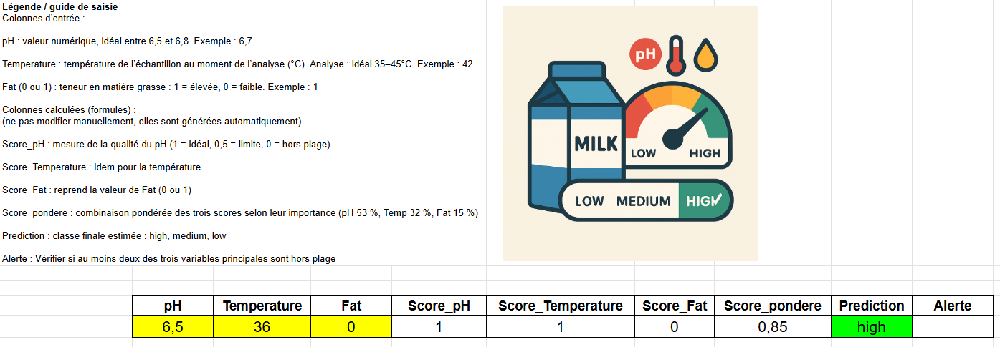

Peut-on prédire la qualité du lait avec le machine learning ?
Un projet pratique d’analyse de données et de classification
By Alexandre Carton
July 31, 2025
Introduction et contexte du machine learning — le workflow
L’objectif du machine learning, c’est de ne pas avoir besoin de connaître toutes les équations scientifiques qui décrivent un système.
Avec un modèle physique classique, on part des lois (mécaniques, chimiques…) → on prend les entrées → on calcule les sorties.
Mais parfois, ces lois sont trop complexes ou impossibles à écrire précisément.
👉 Le machine learning propose une autre approche :
« Et si, au lieu de connaître les équations, on apprenait directement des exemples ? »
🔁 Un changement de logique
-
Modèle classique : on connaît les lois → on calcule la sortie à partir des entrées.
-
Machine learning : on donne plein d’exemples d’entrées et de sorties, et le modèle apprend la règle générale tout seul.
🎯 Précision du modèle : l’accuracy
Une fois entraîné, le modèle doit être capable de prédire une sortie correcte à partir d’une nouvelle entrée qu’il n’a jamais vue.
Mais attention : un modèle n’est jamais parfait !
Par exemple, un modèle avec 80 % de précision veut dire qu’il donne la bonne réponse 8 fois sur 10… mais se trompe encore dans 20 % des cas.
L’objectif ? Obtenir la meilleure précision possible (accuracy), sans surcharger inutilement le modèle.
Le but est simple : maximiser cette précision.
Et pour ça, deux leviers principaux :
- Plus de données pertinentes : capteurs, mesures, signaux fiables → plus de matière à apprendre.
- Un modèle plus adapté : parfois un modèle plus complexe (mais pas trop !) permet d’améliorer les performances.
🧠 Typologie de modèles
Le choix du modèle dépend :
-
du type de sortie attendue (ex : une classe → modèle de classification ; une valeur continue → régression),
-
et du type d’apprentissage :
-
supervisé : on connaît les réponses pendant l’apprentissage,
-
non supervisé : on cherche à découvrir des structures dans les données (ex : regroupements).
-

🔁 Le workflow du machine learning, étape par étape
Quel que soit le problème, la démarche reste la même :
-
Collecte des données : capteurs, sondes, bases existantes
-
Nettoyage et préparation : vérifier, convertir, formater les données
-
Choix du type d’apprentissage :
-
Supervisé : on a les réponses (ex : qualité du lait)
-
Non supervisé : on n’a pas les réponses (ex : grouper des profils similaires)
-
-
Entraînement du modèle : on lui montre les exemples et il apprend
-
Évaluation : on vérifie sur des données nouvelles s’il se débrouille bien
-
Déploiement : sur le cloud, dans un appareil embarqué, ou intégré dans un process industriel

Ne ratez plus aucune nouveauté : abonnez-vous à la newsletter 👋
Prédiction de la qualité du lait avec le machine learning
Pour illustrer concrètement la méthode du machine learning, prenons un cas pratique.
Le site
Kaggle propose des jeux de données gratuits pour s’entraîner. Ici, nous allons utiliser un dataset qui contient des mesures sur des échantillons de lait, et essayer de prédire automatiquement leur qualité.
🔧 Le projet est réalisé en Python, avec la bibliothèque Scikit-learn, (le lien avec le code source est disponible en bas de l’article).
🎯 Objectif Ce projet a pour but de prédire automatiquement la qualité du lait à partir de mesures physico-chimiques et sensorielles, en utilisant des algorithmes de machine learning supervisé.
L’objectif final est multiple :
- ✅ Fiabiliser et automatiser les contrôles qualité : en remplaçant ou en complétant les inspections manuelles, souvent subjectives et coûteuses, par un système d’aide à la décision rapide, répétable et objectivable.
- 💡 Optimiser les processus industriels : en détectant en temps réel les dérives de production (pH, goût, turbidité, etc.), le modèle permet d’anticiper les non-conformités, d’ajuster les paramètres de fabrication ou de trier les lots efficacement.
- 💰 Réduire les coûts de production et les pertes, en identifiant précocement les lots non conformes ou dégradés, ce qui permet d’agir rapidement (ajustement du processus, élimination ou revalorisation des lots impropres à la consommation).
📊 À propos du dataset :
Les données sont disponibles dans un simple fichier CSV (milknew.csv)
Le jeu de données contient 1059 échantillons de lait, collectés manuellement, chacun décrit par 7 variables indépendantes.
Résumé des variables (features)
| Variable | Description | Valeurs possibles |
|---|---|---|
pH |
Mesure de l’acidité ou de l’alcalinité du lait. Influence la fraîcheur et la stabilité. | Valeurs continues entre 3.0 et 9.5 |
Temperature |
Température de l’échantillon lors de l’analyse. Impacte la qualité microbiologique. | Valeurs continues entre 34°C et 90°C |
Taste |
Évaluation sensorielle du goût du lait, réalisée par un testeur ou un capteur. | 0 = mauvais goût, 1 = bon goût |
Odor |
Évaluation olfactive, révélant la fraîcheur ou d’éventuelles altérations. | 0 = mauvaise odeur, 1 = bonne odeur |
Fat |
Teneur en matière grasse, un indicateur clé pour la texture et la valeur nutritionnelle. | 0 = faible, 1 = élevée |
Turbidity |
Mesure de la turbidité (opacité), souvent liée à des particules indésirables. | 0 = limpide, 1 = trouble |
Colour |
Indication de la couleur du lait, influencée par la composition ou l’oxydation. | Valeurs entières entre 240 et 255 |
La variable cible Grade indique la qualité du lait :
-
Low→ mauvaise qualité -
Medium→ qualité moyenne -
High→ bonne qualité
🧪 Ces classes ont été déterminées en fonction de seuils sur les variables décrites ci-dessus. Certaines d’entre elles sont binarisées selon des critères experts (ex. : goût acceptable = 1), tandis que d’autres (comme le pH ou la température) conservent leur valeur continue.
Exploration des données
🧹 Vérification et nettoyage des données
Nous commençons par une analyse exploratoire du fichier CSV fourni afin de :
- vérifier l’intégrité du jeu de données (présence de données manquantes),
- identifier le type de données associé à chaque variable.
Aperçu des 5 premières lignes
| pH | Temprature | Taste | Odor | Fat | Turbidity | Colour | Grade | |
|---|---|---|---|---|---|---|---|---|
| 0 | 6.6 | 35 | 1 | 0 | 1 | 0 | 254 | high |
| 1 | 6.6 | 36 | 0 | 1 | 0 | 1 | 253 | high |
| 2 | 8.5 | 70 | 1 | 1 | 1 | 1 | 246 | low |
| 3 | 9.5 | 34 | 1 | 1 | 0 | 1 | 255 | low |
| 4 | 6.6 | 37 | 0 | 0 | 0 | 0 | 255 | medium |
📋 Résumé des types de données :
| # | Colonne | Valeurs non nulles | Type |
|---|---|---|---|
| 0 | pH | 1059 | float64 |
| 1 | Temprature | 1059 | int64 |
| 2 | Taste | 1059 | int64 |
| 3 | Odor | 1059 | int64 |
| 4 | Fat | 1059 | int64 |
| 5 | Turbidity | 1059 | int64 |
| 6 | Colour | 1059 | int64 |
| 7 | Grade | 1059 | object |
👉 Résultat de l’analyse initiale :
- Le dataset contient bien 1059 échantillons, sans aucune donnée manquante.
- La typologie des colonnes est cohérente :
- Les données continues (
pH,Temperature) sont de typefloat64ouint64selon la précision, - Les variables binaires (
Taste,Odor,Fat,Turbidity) sont de typeint64, - La variable cible
Gradeest de typeobject(catégorielle, texte)
- Les données continues (
🔎 Aucune transformation n’est nécessaire à ce stade en ce qui concerne les types de données ou la gestion des valeurs manquantes. Le dataset est donc prêt à être utilisé pour l’étape de prétraitement.
Statistiques descriptives
Avant de construire un modèle de machine learning, il est essentiel de comprendre la structure et la distribution des données.
Nous commençons donc par une analyse descriptive pour identifier les tendances générales et les relations entre les variables.
Cette phase se décompose en trois étapes :
-
Analyse des valeurs centrales (moyenne, médiane, quartiles) pour visualiser la répartition des variables et détecter d’éventuelles asymétries ou valeurs extrêmes.
-
Analyse univariée à l’aide de boxplots, pour observer la dispersion et repérer les outliers.
-
Analyse bivariée via une matrice de corrélation, afin d’évaluer les relations linéaires entre les variables et identifier les éventuelles redondances.
Ces éléments nous permettront d’anticiper la pertinence de chaque variable dans le modèle prédictif, et d’orienter la phase de sélection de features.
Résumé des statistiques descriptives
| pH | Temprature | Taste | Odor | Fat | Turbidity | Colour | |
|---|---|---|---|---|---|---|---|
| count | 1059.000 | 1059.000 | 1059.000 | 1059.000 | 1059.000 | 1059.000 | 1059.000 |
| mean | 6.630 | 44.227 | 0.547 | 0.432 | 0.671 | 0.491 | 251.840 |
| std | 1.400 | 10.098 | 0.498 | 0.496 | 0.470 | 0.500 | 4.307 |
| min | 3.000 | 34.000 | 0.000 | 0.000 | 0.000 | 0.000 | 240.000 |
| 25% | 6.500 | 38.000 | 0.000 | 0.000 | 0.000 | 0.000 | 250.000 |
| 50% | 6.700 | 41.000 | 1.000 | 0.000 | 1.000 | 0.000 | 255.000 |
| 75% | 6.800 | 45.000 | 1.000 | 1.000 | 1.000 | 1.000 | 255.000 |
| max | 9.500 | 90.000 | 1.000 | 1.000 | 1.000 | 1.000 | 255.000 |

- ✅ Aucune donnée manquante : toutes les colonnes comptent 1059 valeurs.
- 📉 pH : moyenne autour de 6.6, valeurs extrêmes entre 3.0 et 9.5 — quelques cas atypiques possibles.
- 🌡 Température : moyenne à 44 °C, avec des pointes jusqu’à 90 °C — probablement des cas particuliers ou expérimentaux.
- 🎨 Couleur : très homogène (moyenne à 251.8), majorité des échantillons proches du blanc standard (255).
Variables binaires :
- 😋 Goût (
Taste) : environ 55 % des échantillons sont jugés bons. - 👃 Odeur (
Odor) : plus de la moitié présentent une odeur mauvaise. - 🧈 Matière grasse (
Fat) : 67 % des échantillons ont une teneur élevée. - 💧 Turbidité : bien répartie entre limpide et trouble (valeurs équilibrées).
🧠 Ces tendances permettront d’orienter la phase de modélisation et d’identifier les variables les plus discriminantes pour la prédiction de la qualité.
Boxplots par variable — Analyse univariée
Ces diagrammes permettent d’analyser la distribution de chaque variable et d’identifier les valeurs aberrantes (outliers).
- pH : Distribution centrée autour de 6,6. Quelques outliers vers le bas (< 4) et le haut (> 8.5), à surveiller.
- Temperature : Médiane autour de 41-44°C. Des outliers élevés jusqu’à 90°C → échantillons potentiellement atypiques ou erreurs de saisie.
- Taste / Odor / Fat / Turbidity : Variables binaires (0 ou 1), donc représentées par des barres fines → distribution claire (présence/absence).
- Colour : Distribution concentrée vers 255, avec quelques valeurs plus basses (~240), reflétant une variation de teinte perceptible dans peu d’échantillons.
👉 Conclusion :
- Peu de variabilité sur les données binaires (discrètes).
TemperatureetpHnécessitent une attention particulière pour un éventuel traitement des valeurs extrêmes.

Matrice de corrélation (%) (Analyse bivariée)
Cette heatmap montre les corrélations linéaires entre les variables (coefficient de Pearson) exprimées en pourcentage.
💡 Corrélations significatives :
-
Odorest positivement corrélée à :Taste(32 %)Fat(31 %)Turbidity(46 %)
→ Une bonne odeur est souvent associée à un bon goût, une forte teneur en graisse et un lait trouble, ce qui peut refléter un lait riche mais non homogénéisé.
-
Fat↔Taste: 32 %
→ La matière grasse influence positivement la perception du goût. -
Fat↔Turbidity: 33 %
→ Plus de matière grasse → lait plus trouble, ce qui est logique. -
pHa une faible corrélation avec toutes les autres variables.
→ Il varie indépendamment du reste → bonne variable discriminante potentielle.
🔍 Corrélations faibles / négligeables :
Colourest peu corrélée aux autres variables.Temperaturen’est pas fortement liée aux critères sensoriels (goût, odeur…).

Résumé exploratoire synthétique
L’analyse préliminaire du jeu de données met en évidence les points suivants :
-
✅ Données propres : 1059 échantillons, aucune valeur manquante.
-
📉 Variables continues (
pH,Temperature,Colour) :-
Quelques valeurs extrêmes (notamment pour
Temperaturejusqu’à 90 °C). -
Colourest très concentrée autour de 255 → faible variabilité.
-
-
🔢 Variables binaires (
Taste,Odor,Fat,Turbidity) :-
Fatest majoritairement élevée (67 %), -
Odorest plus souvent mauvaise, -
Variables globalement bien réparties entre 0 et 1.
-
-
📦 Boxplots :
-
Confirment les observations ci-dessus,
-
Outliers visibles pour
TemperatureetpHuniquement.
-
-
🔗 Corrélations :
-
Relations fortes entre variables sensorielles :
Taste,Fat,Odor,Turbidity, -
pHetColoursont peu corrélés aux autres → apportent une information indépendante.
-
Développer un modèle prédictif avec le machine learning
Maintenant que nos données sont prêtes, voyons comment créer un « modèle » qui va apprendre à reconnaître la qualité du lait. Imaginez :
-
On montre au modèle beaucoup d’exemples de lait dont on connaît déjà la qualité.
-
Le modèle étudie les mesures (goût, odeur, pH…) et repère des motifs.
-
Puis, sur un nouvel échantillon, il prédit si la qualité est « Low », « Medium » ou « High ».
Choix du modèle : la forêt d’arbres de décision
Dans notre cas, nous utilisons un apprentissage supervisé, car nous connaissons la sortie attendue : c’est un problème de classification, puisque la sortie est une classe (le grade du lait).
Nous avons choisi un algorithme de type Random Forest (forêt aléatoire d’arbres de décision), car il est :
-
robuste face au bruit dans les données,
-
performant même sans réglages poussés,
-
et nécessite peu d’ajustements pour obtenir de bons résultats.
🧠 Un arbre de décision, c’est quoi ?
On peut le comparer à un petit organigramme logique :
« Si la matière grasse > X, alors bonne qualité ; sinon, vérifier l’odeur… »
Chaque arbre prend ses propres décisions sur la base de critères simples.
🔧 Paramètres choisis
Par défaut, pour l’entraînement, nous avons utilisé 100 arbres dans la forêt.

Entraînement vs évaluation : pourquoi on découpe les données
Pour que le modèle apprenne et qu’on puisse mesurer s’il est vraiment bon, on sépare les données en deux morceaux :
-
X_train et y_train : ce sont les entrées (X_train) et les bonnes réponses (y_train) que le modèle voit pendant l’entraînement. C’est là qu’il apprend les règles à partir des exemples.
-
X_test et y_test : ce sont des données nouvelles, que le modèle n’a pas vues pendant l’entraînement. On les utilise pour évaluer sa capacité à généraliser — autrement dit, pour vérifier qu’il ne fait pas que « mémoriser » mais qu’il sait bien prédire sur du neuf.
En résumé : on entraîne avec
X_train/y_train, on teste avecX_test/y_test. Cela permet de savoir si le modèle fonctionne vraiment et pas seulement sur les exemples qu’on lui a montrés.
Interprétation des résultats du modèle à l’aide de la matrice de confusion
La matrice de confusion est un tableau qui compare ce que le modèle a prédit avec ce qui était vraiment vrai.
Chaque ligne correspond à la classe vraie, chaque colonne à la classe prédite. L’idée : voir non seulement combien de prédictions étaient correctes, mais dans quel sens les erreurs ont été faites.
On voit non seulement que le modèle est bon, mais aussi quel type d’erreur il fait.
Ici dans notre cas on peut noter :
-
Précision globale élevée : la majorité des échantillons ont été correctement classés.
-
Le modèle a :
-
correctement identifié 85/86 laits de qualité
low,- 1 a été confondu avec
high. Autrement dit, un lait mauvais a été jugé comme bon — c’est une erreur à surveiller car c’est une fausse alarme inverse (faux négatif surlowvu du point de vue dehigh).
- 1 a été confondu avec
-
parfaitement reconnu les 75/75 laits
medium, -
correctement classé 51/51 laits
high.
-

Amélioration : optimisation du modèle actuel
Le modèle fonctionne déjà très bien (≈99 % de précision), mais il utilise 7 features pour faire sa prédiction.
Or, dans certains contextes (embarqué, temps réel, coût de collecte des données), réduire le nombre de variables tout en gardant une précision élevée est une optimisation très utile : on diminue la complexité, on accélère les inférences, et on simplifie la maintenance.
Quelles sont les variables les plus importantes ?
Le graphique ci-dessous représente l’importance des variables utilisées par le modèle Random Forest pour prédire la qualité du lait..
-
Chaque barre correspond à une caractéristique du lait.
-
La longueur de la barre indique à quel point cette caractéristique a été utile pour prendre des décisions dans les arbres du modèle.
| Rang | Variable | Interprétation |
|---|---|---|
| 1️⃣ | pH | C’est la variable la plus influente. Un certain seuil de pH semble être un indicateur fort de la qualité du lait. |
| 2️⃣ | Temperature | La température est également très discriminante, sans doute liée à la conservation ou à la fraîcheur du lait. |
| 3️⃣ | Fat | Le taux de matière grasse joue un rôle significatif dans la distinction entre les catégories. |
| 4️⃣ à 7️⃣ | Turbidity, Odor, Colour, Taste | Ces variables ont un impact plus faible dans les décisions du modèle. Elles apportent sans doute des nuances utiles, mais sont moins déterminantes seules. |

Réduction des features : compromis précision vs simplicité
En relançant l’entraînement avec 100 arbres mais en ne gardant que les trois variables les plus importantes (pH, Temperature, Fat), on obtient cette comparaison :
| Jeu de variables | Accuracy | Perte par rapport au complet |
|---|---|---|
| Toutes les variables | 0.998 | — |
| pH + Temperature + Fat | 0.942 | ≈ −6 points |
Garder uniquement ces trois features permet d’obtenir un modèle beaucoup plus léger tout en conservant une précision élevée (~94 %). C’est un compromis raisonnable : on sacrifie environ 6 points de performance pour simplifier la collecte des données, accélérer l’inférence et améliorer l’explicabilité.
Il reste maintenant à décider, en fonction du contexte de déploiement (contraintes de calcul, coût des capteurs, exigence de précision), si cette simplification vaut la légère baisse de performance.
Déploiement léger : prédiction dans Google Sheets (no-code light)
Pour rendre la prédiction de la qualité du lait accessible sans infrastructure lourde, on a construit une version light, directement exploitable dans Google Sheets, qui repose uniquement sur les trois variables les plus influentes : pH, Temperature et Fat. L’idée n’est pas de répliquer exactement la Random Forest, mais d’approximer sa logique avec une règle pondérée simple et interprétable.
Comment ça marche
-
Score par variable :
Chaque mesure est transformée en un score entre 0 et 1 selon sa proximité d’une plage “idéale” :-
pH : idéal entre 6,5 et 6,8.
-
Temperature : idéal entre 35 et 45 °C.
-
Fat : 1 signifie matière grasse élevée (bonne).
-
-
Combinaison pondérée :
On recombine ces trois scores en tenant compte de leur importance relative issue de la Random Forest :-
pH : 53 %
-
Temperature : 32 %
-
Fat : 15 %
Le score global est donc une moyenne pondérée qui reflète ce que le modèle “voit” comme signal fort.
-
-
Décision :
En fonction du score pondéré, on classe l’échantillon enhigh,mediumoulow. Des seuils simples (par exemple ≥0,7 = high, ≥0,5 = medium, sinon low) permettent d’avoir une prédiction rapide et compréhensible. -
Alerte :
Si au moins deux des trois variables principales sont hors de leur plage idéale, une fenêtre “Vérifier” s’active pour signaler un contrôle manuel.

Conclusion
En parcourant l’ensemble du workflow machine learning, nous avons démontré qu’il est possible de bâtir, à partir de simples mesures physico-chimiques et sensorielles, un modèle de prédiction rapide, fiable et explicable pour la qualité du lait.
Après exploration, préparation des données et expérimentation de plusieurs variantes, la Random Forest s’est avérée la plus performante : avec seulement trois variables : pH, Temperature et Fat, elle atteint 94 % de précision tout en restant légère à déployer.
🥛 Recommandations aux producteurs de lait
- Surveiller en priorité le pH et la température : ces deux mesures expliquent à elles seules l’essentiel des variations de qualité.
- Former le personnel à l’interprétation des prédictions : un outil de scoring n’est utile que si les opérateurs savent en tirer des actions concrètes (réglage de température, tri de lots, nettoyage de ligne).
Variables prioritaires (top 3)
| Variable | Valeur cible / plage | Pourquoi c’est important |
|---|---|---|
| pH | 6,5 – 6,8 | Meilleure discrimination de qualité. Valeurs hors intervalle = alerte. |
| Temperature | 35–45 °C (analyse) / <4 °C (stockage) | Indicateur de fraîcheur et sécurité microbiologique. |
| Fat | 1 (élevé dans ce dataset) | Influence directe du goût et perception de richesse. |
Ne ratez plus aucune nouveauté : abonnez-vous à la newsletter 👋
Sources
-
Jeu de données – Prédiction de la qualité du lait
Milk Quality Prediction – Kaggle -
Feuille de route – Cheat Sheet du projet
Google Sheet – Workflow & logique Machine Learning
- Posted on:
- July 31, 2025
- Length:
- 15 minute read, 3185 words
- See Also: